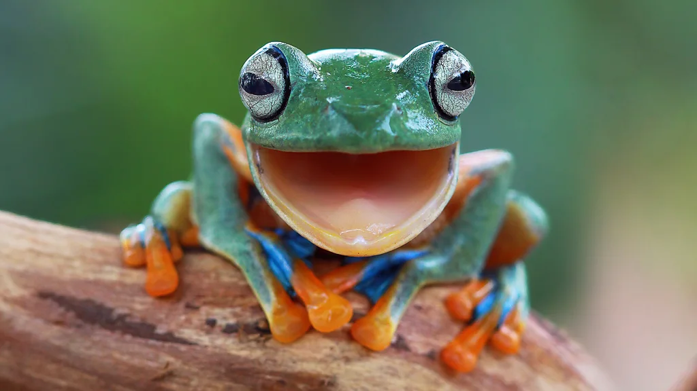
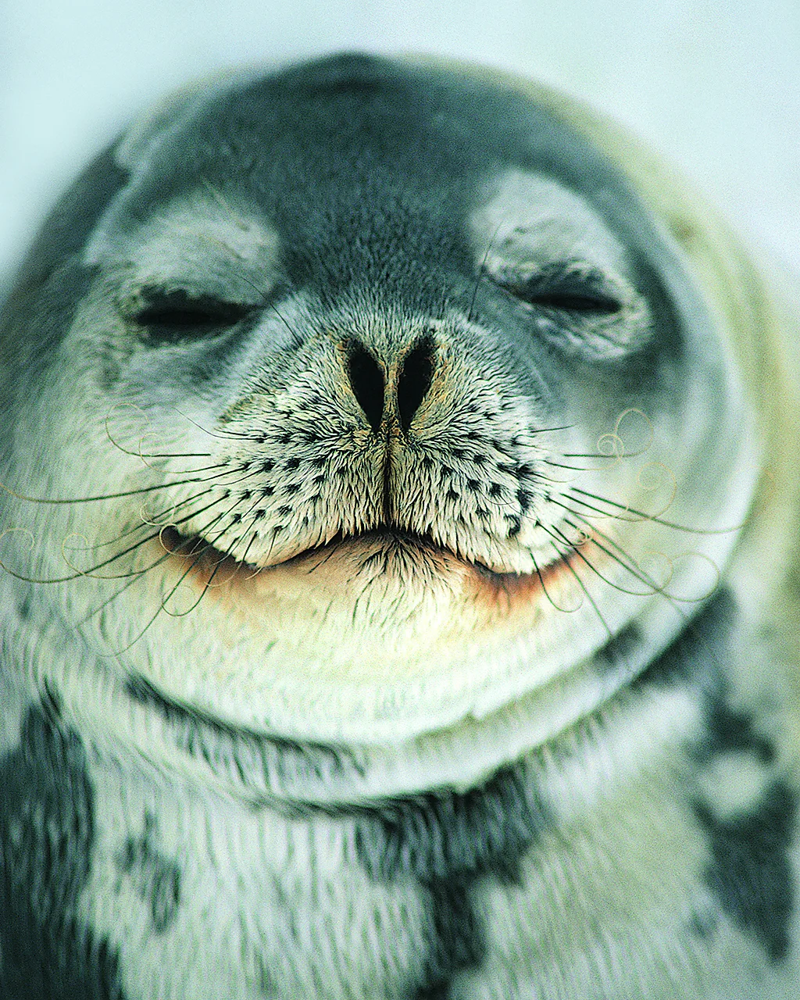

Why not try these science-backed tips to get more happiness in your life?
Some people are born to be happier than others. But whether you're the kind of person who sings in the shower and dances in the rain, or of a more dour inclination, contentment isn't just something that happens to us. We can all change our habits to coax more of it into our lives.
here are our top tips for a happier 2025.
Embrace friendship as we age
Friendship benefits people across all ages, but in later life, it can become an especially important source of happiness. While older people typically shrink their social networks to prioritise spending time with those who know them well, research shows that it's a good idea to remain open to new friendships, as they give us slightly different benefits to our relationships with family, which can be based on obligation. As friendships are voluntary, non-obligatory relationships that can begin or end at any time, they tend to be more fun and less tense or fraught.
Although older adults may face a number of hurdles which can make meeting new people difficult, in some ways, it should be easier for us to make friends: our personalities mature, we gain more social skills, our outlook becomes more joy-oriented and we tend to become more agreeable. And the effort of maintaining quality friendships as we age is worth it, as the advantages stretch beyond just psychological wellbeing - it also improves our cognitive functioning and physical health. In fact, research consistently suggests that friendships are as important as family ties in predicting wellbeing in adulthood and old age. And if you are the sort of person who finds making friends difficult . sharing an awe-striking moment, such as the total solar eclipse that passed across North America last year, is one way to help make you feel closer to the people around you while also inspiring some positive emotions along the way.
Read more about why later life can be a golden age for friendship here.Practice "confelicity"
Compassion is a well-known foundation of true friendship. Derived from the Latin for "shared pain", this empathy helps us form strong connections when our friends need help. But there's an opposite state that is relatively unknown and equally important - "confelicity", as David Robson wrote for the BBC.
Meaning "shared happiness", it's an undervalued facet of good relationships and could be just as important as compassion for maintaining friendships, multiple studies suggest.
Enthusiastically supporting a friend's good news - and asking questions about it - is a basis of being a good friend. Respond too passively - or actively underplay your friend's success - and you run the risk of damaging the relationship.
Do some volunteering
It's almost a cliché to say that doing something for someone else makes you feel better than rewarding yourself, but the more learned about altruism, the more it seems to ring true.
In fact, studies have found that volunteering can even help with series conditions like chronic pain and depression. A 2002 study, for example, found peer volunteers assigned to help others struggling with chronic pain saw their pain intensity scores drop while they were volunteering. Other studies have shown that looking after animals can improve our health and taking care of houseplants can help us thrive, especially in old age.
Some healthcare providers are now even prescribing volunteering as one particularly effective form of "social prescribing": prescriptions which connect people to community resources and activities. Sending people to everything from art classes to cycling groups to groups, and helping them with food and heating bills, are all increasingly proven to be valid health interventions which could also reduce pressure on health services.
Read more about the unexpected benefits of prescribing purpose and why volunteering seems to be so good for us, in this book extract we published from writer Julia Hotz.
Connect with your ancestors
There is another way the past could help you in the present. Research suggests that engaging with our ancestry can have profound psychological benefits. Family stories about overcoming adversity, for example, can be empowering when passed down to new generation.
M Moore, an emeritus professor of psychology at Swinburne University of Technology, in Melbourne has found that people who know more about their family history have higher levels of satisfaction and wellbeing. Engaging in the task of researching your family tree can lead to feeling more in control of their lives, alongside a deeper understanding of your place in the world.
It can also give you an affirming sense of perspective and gratitude - knowing your life today has been made possible by the struggles and fortitude of your predecessors on behalf of those who come after them.
Read more in Katherine Wang's story of her grandfather's battle against adversity in China nd how it led her to learn more about the healing power of exploring her family history.
Write a list
Counting your blessings is an age-old piece of advice, but it underpins a simple but well-evidenced intervention. It turns out that writing a list of three good things that have happened to us can help to boost our mood. Whether that is a life-changing event like passing an important exam or having a baby, or something seemingly inconsequential, like bumping into an old friend, or enjoying some beautiful early evening light while out for a walk - there is a growing body of research that suggests it can improve our wellbeing.
Read more from Claudia Hammond about how this simple exercise can help you through tough times.
Look forward to fun activities
There's nothing quite like a scenic drive – the wind in your hair, some tunes on the stereo, the freedom of the open road ahead. Well, now rats can enjoy a slice of this vehicular heaven, after researchers at the University of Richmond, Virginia, taught their furry, wriggly-nosed subjects to drive small Perspex automobiles in the laboratory.
The rats mastered this new skill quickly, and were soon jumping into the cars enthusiastically, in preparation for their next trip. Eventually the researchers noticed some rats doing excited little jumps as though they were enjoying the anticipation of pleasure.
This led to a whole new avenue of research. Could the expectation of fun be as rewarding as the activity itself? In another experiment, the scientists trained some rats to wait for rewards – while others were given them immediately. Later, they assessed the rats for optimism and found that those who had been trained to wait for rewards were more optimistic.
The researchers speculated that this could work for humans too – by routinely anticipating pleasurable activities or events we could reprogram our brains to be more optimistic.
Do nothing
If you have made it this far down the list, this one might come as something of a surprise. But research suggests that worrying too much about being happy can actually be a block to feeling it.
Experiments that primed people to desire greater happiness - perhaps by reading about how happy they can be - before watching an uplifting film ended up feeling more disappointed than elated. The theory is that by raising their expectations, reading and worrying about the importance of happiness can actually leave people feeling deflated.
You might have experienced this yourself during a big event or party you have been looking forward to that doesn't quite live up to those expectations.
Iris Mauss, a psychologist at the University of California, Berkeley, has also shown that the desire and pursuit of happiness can also increase feelings of loneliness and disconnection. She recommends adopting a more stoic attitude and being more accepting of life's ups and downs.
Read more about why trying less to find happiness may make you happier in these articles by David Robson and Nat Rutherford
Don't drink too much caffeine
During the cold, dark winter days, a cup of coffee might give your brain and body a much-needed boost. Consuming caffeine can make us feel alert as it is quickly absorbed into the bloodstream where it outcompetes adenosine, a chemical that makes us feel tired.
Research shows that there are many health benefits associated with consuming caffeine, including a decreased risk of several forms of cancer, heart disease and type 2 diabetes, as well as improved physical performance and protection against depression.
But timing is key when it comes to caffeine as it can take a while to kick in and a long time to wear off. Scientists recommend having your last caffeine dose eight hours and 48 minutes before you go to bed. We also shouldn't consume too much caffeine - no more than 400mg or around two to three cups of coffee, depending on the strength - to avoid disrupted sleep, headaches, nausea and anxiety.
Read more about what happens if you take too much caffeine in this article by Jessica Brown.
... and a bonus from our newsletter: what I learned from six steps to calm
by Melissa Hogenboom
This year I've covered many science-backed ways to improve our health and wellbeing, but I must admit, like many of us, I don't always act on the advice I am featuring. After completing a six-week mindfulness course I stopped practicing mindfulness once the course was complete, despite learning that even five minutes a day has numerous benefits such as improving attention and reducing stress, anxiety and depression.
However, this summer, whilst researching and writing six science-backed steps to feel calmer, it quickly became apparent that even if we are feeling relatively calm and stress-free, we can all benefit from many of the anti-anxiety exercises featured - and I did find myself using the mindfulness skills I had learned when my mind was too active at night.
Often we only look for interventions once we are already feeling stressed or burnt out - or if anxiety hits it can feel overwhelming to seek an intervention, but it's clear that there are ways to help prevent ourselves getting to that state in the first place. Whilst mindfulness is not for me every day, having it in my toolkit is certainly reassuring should I ever need it.
Out of the six steps featured, the one that I continue to come back to, is the benefits of nature. It's well known how beneficial the outdoors can be for our mental health, but even when we're stuck at home, studies have shown that enjoying nature virtually still has a remarkable positive effect. Nature has a positive effect on the mind and body, but it can be overlooked as a simple method to remain calm, which is why I found that conjuring up nature virtually to be such a powerful tool.
If we hear recording of wildlife for instance, it can have a calming effect. Other research has found that virtual reality access to a marine environment improved participants' moods. The same goes for looking at nature scenes on a computer or phone screen. And while virtual nature shouldn't replace the real thing, it's reassuring that giving our mind a regular break virtually can do wonders.
Read more from the Six Steps to Calm newsletter, by signing up here.